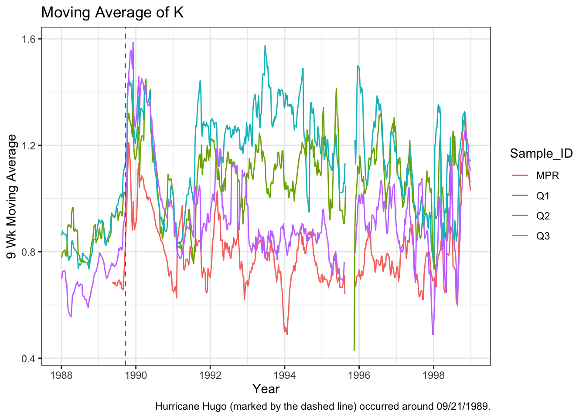
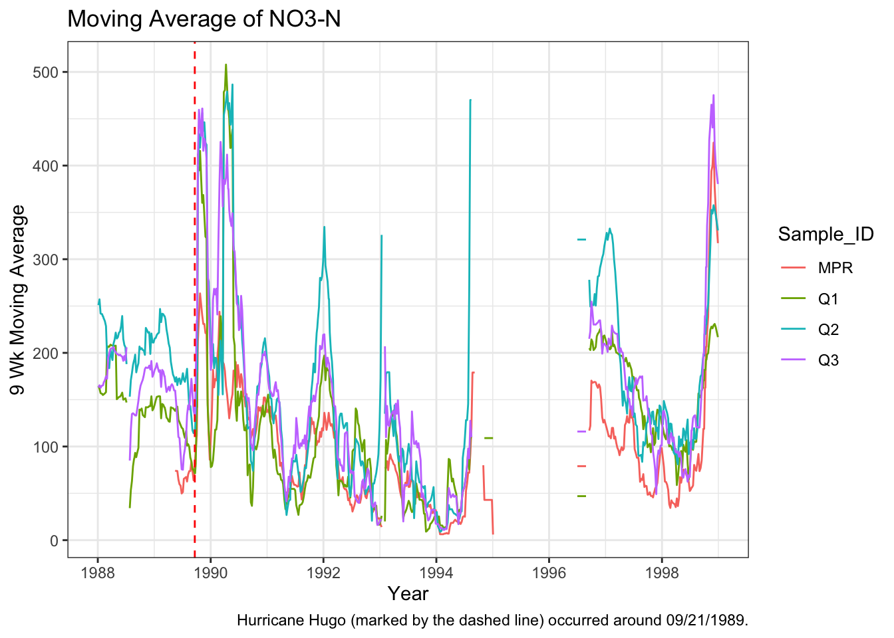
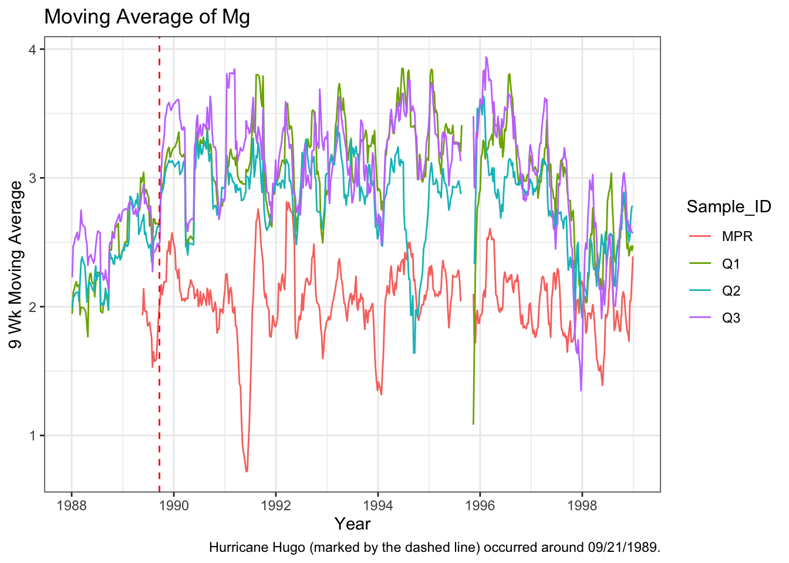
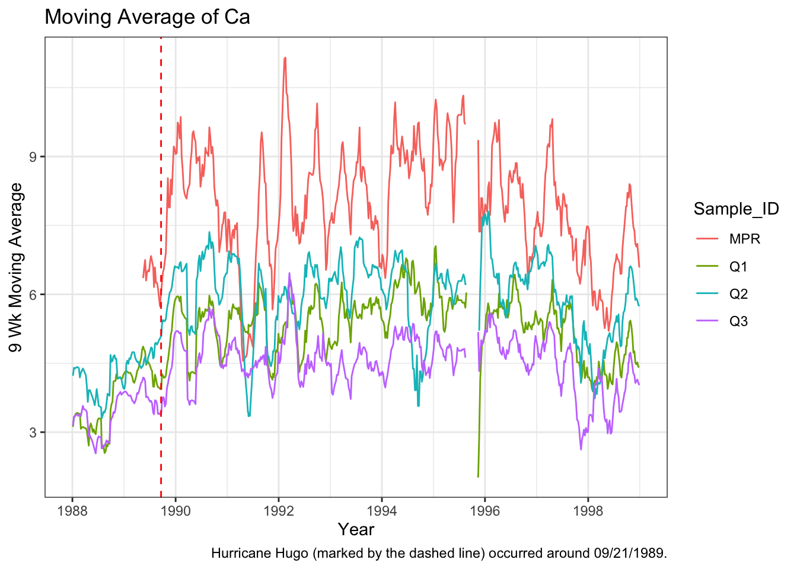
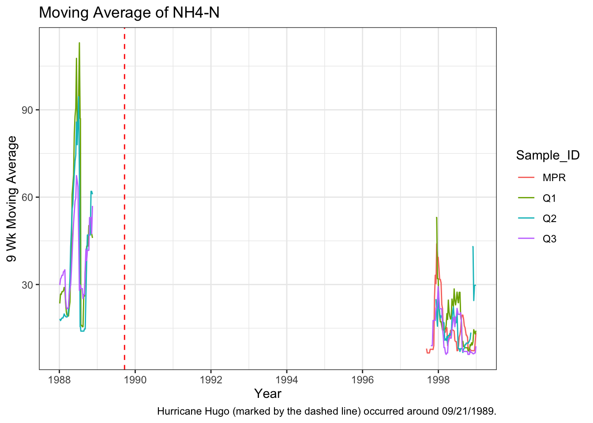

# source moving_avg() locally from R folder
source(here::here("R", "moving_avg.R"))paper
Background
Hurricane Hugo (1989) greatly affected Puerto Rico’s freshwater systems. The extent of the hurricane’s impact can be visualized as moving averages (smoothed estimations) of changes in concentrations of contaminants over time at differently sampled streams. This can be replicated from an existing figure created by Schaefer et al. (2020).
Data
The data is publicly available on the EDI Data Portal and appears as separate files for each sampling site. For this analysis, the “QuebradaCuenca1-Bisley”, “QuebradaCuenca2-Bisley”, “QuebradaCuenca3-Bisley”, and “RioMameyesPuenteRoto.csv” were downloaded for the Q1, Q2, Q3, and MPR sample sites. Each file was read in from the data folder and were fully joined to create a single unique data set called qb_mpr.
Methods
The tidyverse package was used to perform data tidying and wrangling to simplify the analysis. It was necessary to perform pivot_longer() to group all nutrients under a shared column and store the concentration values separately in order to create a singular column for associated moving averages. Sample_Date, nutrients, concentration, and Sample_ID were selected to perform the moving average analysis, where each nutrient would have an associated moving average concentration for a specific sampling date based on the original concentration. Additionally, a new variable year_sample was created by pulling the year from the sampling date for the ease of filtering during visualization.
A major component of this project involved minimizing the moving average calculation to a single date before applying the process over the entire range of sample dates. A single date (focal_date) was envisioned as the “index” in Sample_Date, where any dates within 4.5 weeks (halfway point of nine weeks) of this date were selected as a single window Any concentrations in this time window were then averaged for the central average of a nine week period at that point in time. Essentially, the central average was calculated for each focal date in Sample_Date to include the 4.5 weeks before and after that date; the average concentration was then extracted for each “index” and stored for each date.
moving_avg()was locally sourced from R\moving_avg.R. The associated syntax is located in the moving_avg.R script. The function takes a singular focal date (index) in Sample_Date and checks whether sample dates before and after that focal date are within 4.5 weeks of each other to calculate a centered average for that nutrient. The function was written to include window_size, a parameter adjusting for the desired length required to calculate a moving average. Additional information is linked here.
A new column called moving_avg_nutrients was created by calling sapply() to apply moving_avg() to every nutrient in the data set. Sample_Date stored the sampled dates, concentration was set to conc, and the window_size was specified for nine weeks. A new data set called qb_mpr_ma was created to store moving_avg_nutrients and was used in recreating the visualization.
# recall, we create an RDS file here to ensure we can locally source this dataset for reduced clutter
qb_mpr_ma <- readRDS(here::here("output", "qb_mpr_ma.rds"))Results
Taking a look at the new moving average data set, it is noticeable that NaN are persistent occurrences for NH4-N. It is possible that this is a result of inconsistent sampling, human error, technique error, or other confounding influence that disrupted the sampling process in retaining an actual value. As a result, moving averages were not calculated for several years for NH4-N; it is difficult to tell the results of Hurricane Hugo on this contaminant alone.
# look at the first six rows
head(qb_mpr_ma) Sample_Date nutrients concentration Sample_ID year_sample
1 1986-05-20 K 0.81 Q1 1986
2 1986-05-20 NO3-N 118.00 Q1 1986
3 1986-05-20 Mg 3.04 Q1 1986
4 1986-05-20 Ca 4.26 Q1 1986
5 1986-05-20 NH4-N NA Q1 1986
6 1986-05-27 K 0.82 Q1 1986
moving_avg_nutrients
1 0.8166667
2 113.6666667
3 3.1066667
4 3.9366667
5 NaN
6 0.8166667The data was visualized over a decade (1988-1998) to better visualize assess trends in contaminant concentration over time. An approximate date of 9/21/1989 was selected for Hurricane Hugo’s impact on Puerto Rico and was referenced as a date type for the x-intercept in geom_vline(). Calcium, potassium, magnesium, and nitrate all increased in concentration following Hurricane Hugo. Calcium was most abundant at MPR, Q3 had high mean concentrations of magnesium and potassium post-hurricane, and nitrate was particularly highly concentrated at Q2 and Q3.
library(tidyverse, warn.conflicts = F)── Attaching core tidyverse packages ──────────────────────── tidyverse 2.0.0 ──
✔ dplyr 1.1.4 ✔ readr 2.1.5
✔ forcats 1.0.0 ✔ stringr 1.5.1
✔ ggplot2 3.5.2 ✔ tibble 3.3.0
✔ lubridate 1.9.4 ✔ tidyr 1.3.1
✔ purrr 1.1.0
── Conflicts ────────────────────────────────────────── tidyverse_conflicts() ──
✖ dplyr::filter() masks stats::filter()
✖ dplyr::lag() masks stats::lag()
ℹ Use the conflicted package (<http://conflicted.r-lib.org/>) to force all conflicts to become errorshugo <- as.Date("1989-09-21") # store approximate date for hurricane as date type for x-intercept reference in geom_vline()
plot_facet <- qb_mpr_ma %>% mutate(year_sample = year(Sample_Date)) %>%
filter(year_sample >= 1988 & year_sample <= 1998) %>%
# drop_na(moving_avg_nutrients) %>% # dropping NAs actually caused larger gaps in the data, ggplot automatically removes these
ggplot(aes(x = Sample_Date, y = moving_avg_nutrients, col = Sample_ID, group = Sample_ID)) +
geom_line() + theme_bw() +
labs(title = "Nine Week Moving Averages of Nutrients/Contaminants (1988-1998)",
y = "Moving Average (nine weeks)",
x = "Year", caption = "Hurricane Hugo (marked by the dashed line) occurred around 09/21/1989.") + facet_wrap(~factor(nutrients), scales = "free_y", ncol = 1) +
# plot vertical line to demarcate approximate date for hurricane hugo
geom_vline(xintercept = hugo, linetype = "dashed", col = "red") +
theme(
legend.position = "right",
plot.title = element_text(size = 14, face = "bold"),
axis.text.x = element_text(angle = 45, hjust = 1)
)
plot_facet # view plot# save in figs
ggsave(filename = paste0("plot_facet.png"), path = here::here("figs"), plot = plot_facet)Saving 7 x 5 in image# graph them with for loop
# create list of nutrients (just want the levels)
nutrient_list <- unique(qb_mpr_ma$nutrients)
hugo <- as.Date("1989-09-20")
for (i in nutrient_list) {
# i is not a position but a "type" of nutrient
plot_store <- qb_mpr_ma %>% mutate(year_sample = year(Sample_Date)) %>%
filter(nutrients == i, year_sample >= 1988 & year_sample <= 1998) %>%
ggplot(aes(x = Sample_Date, y = moving_avg_nutrients, col = Sample_ID, group = Sample_ID)) +
geom_line() +
labs(title = paste("Moving Average of", i),
y = "9 Wk Moving Average",
x = "Year", caption = "Hurricane Hugo (marked by the dashed line) occurred around 09/21/1989.") +
theme_bw() + geom_vline(xintercept = hugo, linetype = "dashed", col = "red")
print(plot_store)
ggsave(filename = paste0("plot ", i, ".png"), path = here::here("figs"), plot = plot_store)
}
Saving 7 x 5 in image
Saving 7 x 5 in image
Saving 7 x 5 in image
Saving 7 x 5 in imageWarning: Removed 426 rows containing missing values or values outside the scale range
(`geom_line()`).
Saving 7 x 5 in imageWarning: Removed 426 rows containing missing values or values outside the scale range
(`geom_line()`).